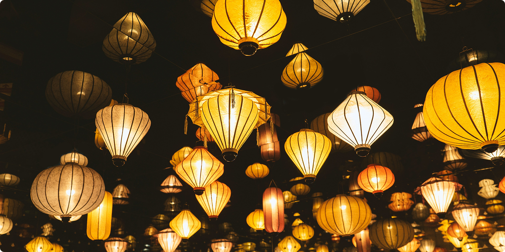

ABOUT THE PAPER LANTERNS FESTIVAL
Since 1992, Westwood Crest Middle School has proudly hosted its beloved 'Paper Lanterns' event, a cherished tradition woven into the
fabric of our school community. Inspired by the rich history of the Chinese Paper Lantern Festival, our event began as a simple
gathering, a way to celebrate the beauty and symbolism of these luminous creations.
Over the years, 'Paper Lanterns' has grown into a vibrant celebration, deeply valued by students, staff, and families alike. Each year, we
honor the ancient art of lantern-making and the profound meanings they represent: hope, joy, and the shedding of negativity. More than
just a festival, 'Paper Lanterns' at Westwood Crest is a testament to cultural awareness, unity, and the enduring power of shared
traditions.